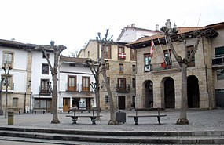

Eskoriatza Gipuzkoako hego-mendebaldean dagoen udalerria da, Debagoiena eskualdean. 2002ko urriaren 1ean, Eusko Jaurlaritzak monumentu-multzo izendatu zuen hirigune historikoa, Sailkatutako Kultura Ondasuna. 4.097 biztanle zituen 2016. urtean
| Azalera | 40,41 km2 |
| Biztanleria | 4.097 biztanle |
| Sorrera | 1630. Urtea |